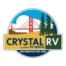

Our Fleet

Crystal RV delivers premium, fully stocked Class C motorhomes to Oakland and the entire East Bay. No lot pickup — we come to you. 5-star rated, expert orientation included.
Oakland is one of the Bay Area's most vibrant hubs — and the perfect launchpad for a California road trip. Crystal RV delivers your fully stocked Class C motorhome anywhere in the East Bay: Temescal, Montclair, Rockridge, Fruitvale, or wherever you are.
We're about 25 miles from Oakland, typically a 30–40 minute drive depending on Bay Bridge or I-880 traffic. Prefer to avoid delivery fees? Self-pickup from our Mountain View location is always free.
Oakland is steps from some of California's best adventures — Muir Woods, Point Reyes, and Yosemite are all within reach. Let us handle the rig; you handle the playlist.
Live availability · Transparent pricing · Instant confirmation.
We deliver to your Oakland address — home, office, or campground. 5+ night rentals receive complimentary delivery. Shorter rentals have a small distance-based fee.
Full cookware set, dishes, coffee maker, kettle, toaster, bed sheets, camp chairs, board games, sewer gear, and more. Just bring groceries.
Never driven an RV? Our 30–60 minute walkthrough covers every system. Most Oakland guests feel completely confident before leaving the driveway.
Flying into Oakland International? We deliver your fully stocked RV to OAK for $100. Start your California adventure the moment you land.
A real expert answers every call — any time, any day. From campground questions to generator troubleshooting, we're always reachable.
Every rental includes $1 million in liability coverage and comprehensive collision protection. Travel with total peace of mind.
We deliver your fully stocked Class C motorhome to your Berkeley address — Telegraph Ave, North Berkeley, the Hills, or anywhere in between. Our Mountain View base is about 35–40 minutes south via I-880 or the Bay Bridge.
UC Berkeley families, East Bay adventurers, and first-time RVers all love our service. We specialize in making the experience completely stress-free from the moment we arrive at your door.